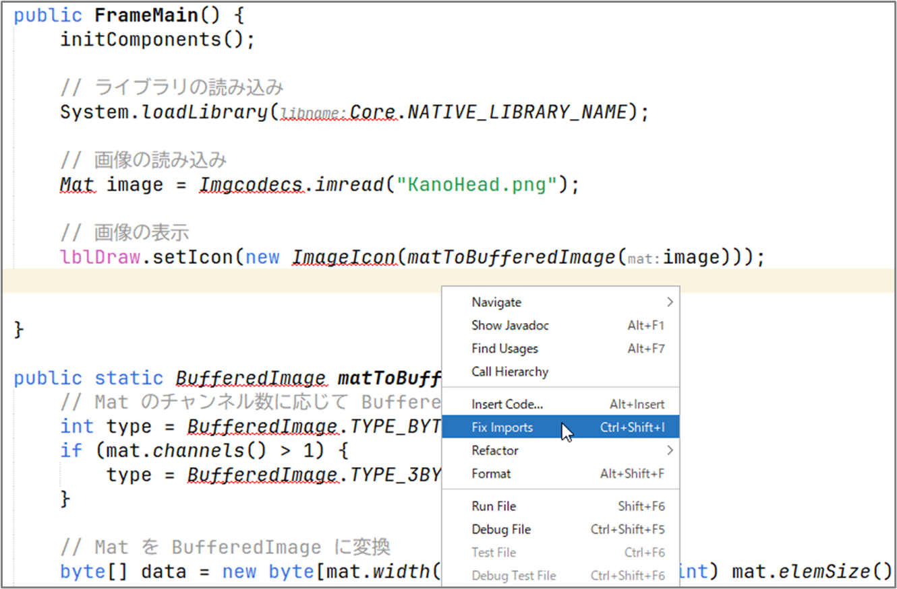
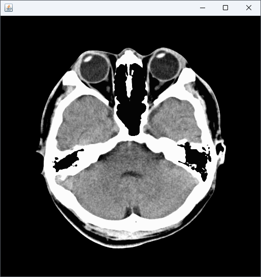

OpenCV での画像の読み込みと表示
このセクションでは Java を使用して OpenCV で画像を読み込み、表示する基本的な方法を学んでいきます。
OpenCV ライブラリのインポート
通常、以下のような import 文で OpenCV ライブラリをインポートします。
これにより、画像データを表す Mat クラスや画像の読み書きを行う Imgcodecs クラスなど、必要な OpenCV の機能にアクセスできるようになります。
OpenCV による画像の読み込み
Java で OpenCV を使って画像を読み込む場合、Imgcodecs クラスの imread メソッドを使用します。これは指定されたパスにある画像ファイルを読み込み、Mat オブジェクトとして返す機能を持っています。
以下に、読み込みの基本的なコードを示します。
System.loadLibrary(Core.NATIVE_LIBRARY_NAME);
String imageFilePath = "./image.png";
Mat image = Imgcodecs.imread(imageFilePath);
System.loadLibrary(Core.NATIVE_LIBRARY_NAME); によって、OpenCV のネイティブライブラリが読み込まれます。
これはプログラムの開始時に一度だけ実行すれば OK です。
頭部 CT 画像（フリー素材）
以下では私の頭部 CT 画像（KanoHead.png、フリー素材）を使っていくことにします。

OpenCV による画像の表示
OpenCV 単体でも、HighGui クラスを用いることで、簡易的に画像の表示を行うことができます。
本サイトのサンプルコードでは、記述をシンプルにするために基本的には HighGui クラスを用いることにしますが、高度な GUI アプリケーションを作成する場合は、Swing などの GUI フレームワークを併用するようにしてください。
HighGui クラスを用いた画像の表示は、imshow メソッドで行い、直後に waitKey メソッドを置くことで、ウィンドウを表示させることができます。以下は実際のコード例です。
import org.opencv.core.Core;
import org.opencv.core.Mat;
import org.opencv.highgui.HighGui;
import org.opencv.imgcodecs.Imgcodecs;
public class Main {
public static void main(String[] args) {
// ライブラリの読み込み
System.loadLibrary(Core.NATIVE_LIBRARY_NAME);
// 画像の読み込み
Mat image = Imgcodecs.imread("KanoHead.png");
// 画像の表示
HighGui.imshow("HighGui による画像の表示", image);
HighGui.waitKey();
System.exit(0);
}
}
以下のようなウィンドウが表示されたら成功です。

Swing による画像の表示
実際の Java アプリケーション開発においては、Swing などの GUI フレームワークを使用するのが一般的です。 そのため、画像を表示するためのウィンドウを作成し、そこに画像を描画する必要があります。
以下では、NetBeans の GUI デザイナを使用している想定で話を進めていきます。
いつものように、JFrame フォームを作成し、そこに JLabel コンポーネントを貼り付けましょう。
JFrame の名前は FrameMain、JLabel の名前は lblDraw、サイズは 512 x 512 としています。

JLabel への画像表示
NetBeans で JFrame フォームを作成すると、コンストラクタの中に GUI の描画を行う initComponents メソッドが生成されます。この後ろに、OpenCV の簡単なコードを書いてみましょう。
initComponents(); // 最初から含まれているコード
// ライブラリの読み込み
System.loadLibrary(Core.NATIVE_LIBRARY_NAME);
// 画像の読み込み
Mat image = Imgcodecs.imread("KanoHead.png");
// 画像の表示
lblDraw.setIcon(new ImageIcon(HighGui.toBufferedImage(image)));
ここで toBufferedImage は Mat を BufferedImage に変換するメソッドで、中身は以下のようになっています。
public static Image toBufferedImage(Mat m) {
int type = BufferedImage.TYPE_BYTE_GRAY;
if (m.channels() > 1) {
type = BufferedImage.TYPE_3BYTE_BGR;
}
int bufferSize = m.channels() * m.cols() * m.rows();
byte[] b = new byte[bufferSize];
m.get(0, 0, b); // get all the pixels
BufferedImage image = new BufferedImage(m.cols(), m.rows(), type);
final byte[] targetPixels = ((DataBufferByte) image.getRaster().getDataBuffer()).getData();
System.arraycopy(b, 0, targetPixels, 0, b.length);
return image;
}
ここまでのコードを記述すると、シンボルが見つからないというエラーが出ているかもしれません。 このエラーを解消するためには、コードエディタの好きな場所で右クリックをし、[Fix Imports]（インポートの修正）を行ってください。

するとコードが解析され、以下のように必要な import 文が自動挿入されます。
import java.awt.image.BufferedImage;
import java.awt.image.DataBufferByte;
import javax.swing.ImageIcon;
import org.opencv.core.Core;
import org.opencv.core.Mat;
import org.opencv.highgui.HighGui;
import org.opencv.imgcodecs.Imgcodecs;
エラーが解消されたらコードを実行してみましょう。

ウィンドウが立ち上がり、画像が表示されたら成功です。
各種データの変換
前節では、Mat オブジェクトを BufferedImage に変換する方法を紹介しました。
その他にも、プログラムを書いているとさまざまな変換が必要になることが考えられます。
ここでは、幾つかのデータ変換の方法を整理して紹介します。
配列から Mat への変換
二次元情報が格納された配列（構造自体は一次元）を Mat に変換したい場合は、Mat のインスタンスを生成し、put メソッドを用いて情報を格納します。以下はコード例です。
Mat のコンストラクタは幾つかの種類がありますが、ここでは行数（rows）、列数（cols）、種類（type）を指定しています。
行数は画像の高さ、列数は画像の幅に相当する点に注意してください。
put メソッドでは、データを流し込む行と列の開始位置、および配列（array）を渡しています。
以下は実際のコード例です。
この例では、解像度 512x512、8 ビットグレースケールの Mat オブジェクトを作成し、
そこに grayData という名前の配列（これは別途自分で用意）を格納しています。
type の例を以下に幾つか示します。
CvType.CV_8U: 8 ビットグレースケールCvType.CV_8UC3: 8 ビットカラーCvType.CV_16U: 16 ビットグレースケールCvType.CV_16UC3: 16 ビットカラーCvType.CV_32F: 32 ビットグレースケール（浮動小数点数）CvType.CV_32FC3: 32 ビットカラー（浮動小数点数）
Mat から配列への変換
Mat から配列にデータを格納したい場合は、get メソッドを使用します。
以下は、CvType.CV_32F の Mat オブジェクトを、float の配列に格納するコード例です。
BufferedImage から Mat への変換
BufferedImage から Mat に変換するには、BufferedImage の情報をデータ配列に変換し、put メソッドを適用します。
以下は関数のコード例です。
public Mat bufferedImageToMat(BufferedImage bi) {
Mat mat = new Mat(bi.getHeight(), bi.getWidth(), CvType.CV_8UC3);
byte[] data = ((DataBufferByte) bi.getRaster().getDataBuffer()).getData();
mat.put(0, 0, data);
return mat;
}
Mat から BufferedImage への変換
Mat から BufferedImage に変換する方法は、前述のとおり、HighGui.toBufferedImage メソッドを使うのが簡単です。以下はコード例です。
まとめ
このセクションでは、OpenCV を用いて Java で画像を読み込み、表示・変換する方法について学びました。 以降のセクションでは、OpenCV による具体的な画像処理の方法について見ていきます。